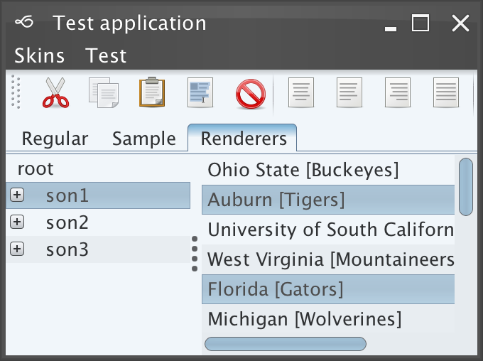
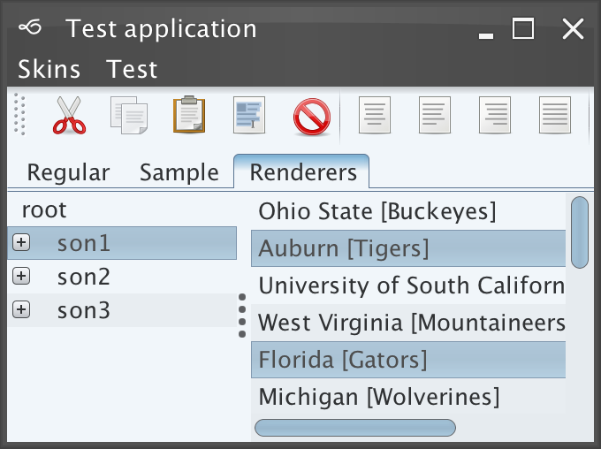
Business available in the
org.pushingpixels.substance.api.skin.BusinessSkin.
In addition, the
org.pushingpixels.substance.api.skin.SubstanceBusinessLookAndFeel
can be used with one of the following options:
SubstanceLookAndFeel.setSkin(new BusinessSkin())SubstanceLookAndFeel.setSkin("org.pushingpixels.substance.api.skin.BusinessSkin")-Dswing.defaultlaf=org.pushingpixels.substance.api.skin.SubstanceBusinessLookAndFeelUIManager.setLookAndFeel(new SubstanceBusinessLookAndFeel())UIManager.setLookAndFeel("org.pushingpixels.substance.api.skin.SubstanceBusinessLookAndFeel");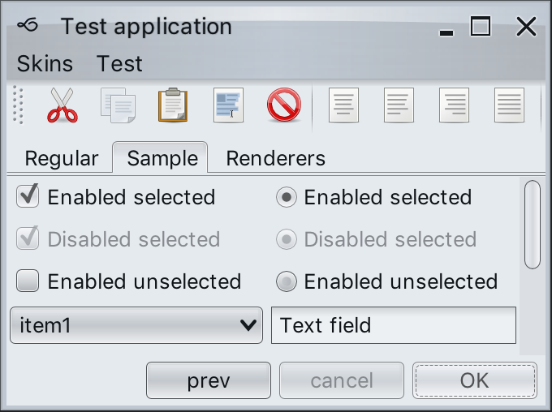 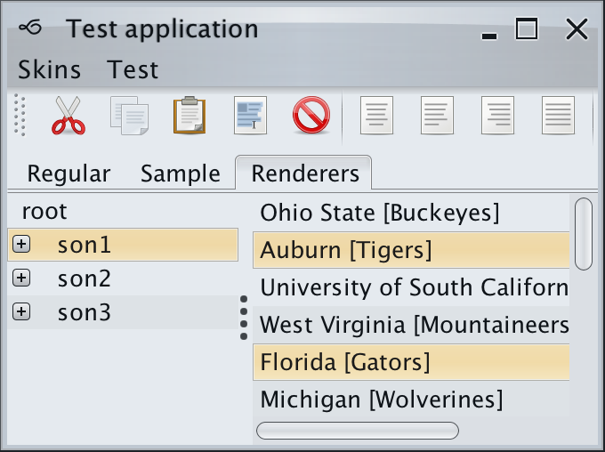
Business Blue Steel available in the
org.pushingpixels.substance.api.skin.BusinessBlueSteelSkin.
In addition, the
org.pushingpixels.substance.api.skin.SubstanceBusinessBlueSteelLookAndFeel
can be used with one of the following options:
SubstanceLookAndFeel.setSkin(new BusinessBlueSteelSkin())SubstanceLookAndFeel.setSkin("org.pushingpixels.substance.api.skin.BusinessBlueSteelSkin")-Dswing.defaultlaf=org.pushingpixels.substance.api.skin.SubstanceBusinessBlueSteelLookAndFeelUIManager.setLookAndFeel(new SubstanceBusinessBlueSteelLookAndFeel())UIManager.setLookAndFeel("org.pushingpixels.substance.api.skin.SubstanceBusinessBlueSteelLookAndFeel");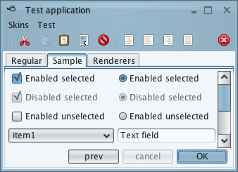 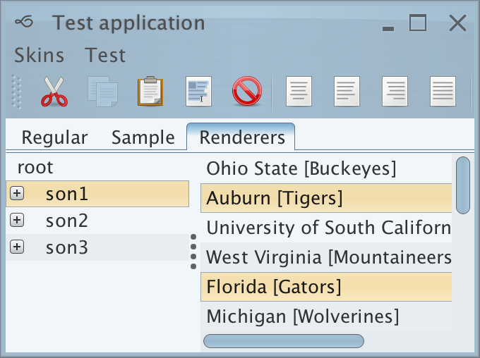
Business Black Steel available in the
org.pushingpixels.substance.api.skin.BusinessBlackSteelSkin.
In addition, the
org.pushingpixels.substance.api.skin.SubstanceBusinessBlackSteelLookAndFeel
can be used with one of the following options:
SubstanceLookAndFeel.setSkin(new BusinessBlackSteelSkin())SubstanceLookAndFeel.setSkin("org.pushingpixels.substance.api.skin.BusinessBlackSteelSkin")-Dswing.defaultlaf=org.pushingpixels.substance.api.skin.SubstanceBusinessBlackSteelLookAndFeelUIManager.setLookAndFeel(new SubstanceBusinessBlackSteelLookAndFeel())UIManager.setLookAndFeel("org.pushingpixels.substance.api.skin.SubstanceBusinessBlackSteelLookAndFeel");
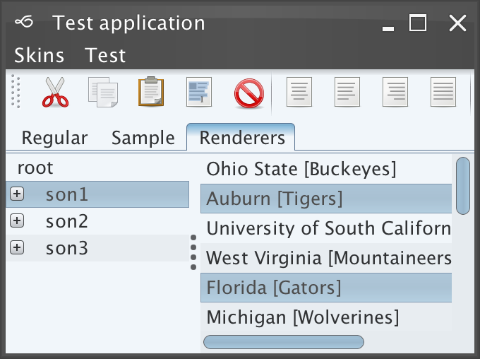
Creme available in the
org.pushingpixels.substance.api.skin.CremeSkin.
In addition, the
org.pushingpixels.substance.api.skin.SubstanceCremeLookAndFeel
can be used with one of the following options:
SubstanceLookAndFeel.setSkin(new CremeSkin())SubstanceLookAndFeel.setSkin("org.pushingpixels.substance.api.skin.CremeSkin")-Dswing.defaultlaf=org.pushingpixels.substance.api.skin.SubstanceCremeLookAndFeelUIManager.setLookAndFeel(new SubstanceCremeLookAndFeel())UIManager.setLookAndFeel("org.pushingpixels.substance.api.skin.SubstanceCremeLookAndFeel");


Creme Coffee available in the
org.pushingpixels.substance.api.skin.CremeCoffeeSkin.
In addition, the
org.pushingpixels.substance.api.skin.SubstanceCremeCoffeeLookAndFeel
can be used with one of the following options:
SubstanceLookAndFeel.setSkin(new CremeCoffeeSkin())SubstanceLookAndFeel.setSkin("org.pushingpixels.substance.api.skin.CremeCoffeeSkin")-Dswing.defaultlaf=org.pushingpixels.substance.api.skin.SubstanceCremeCoffeeLookAndFeelUIManager.setLookAndFeel(new SubstanceCremeCoffeeLookAndFeel())UIManager.setLookAndFeel("org.pushingpixels.substance.api.skin.SubstanceCremeCoffeeLookAndFeel");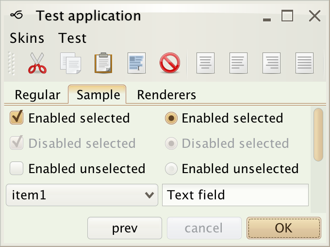 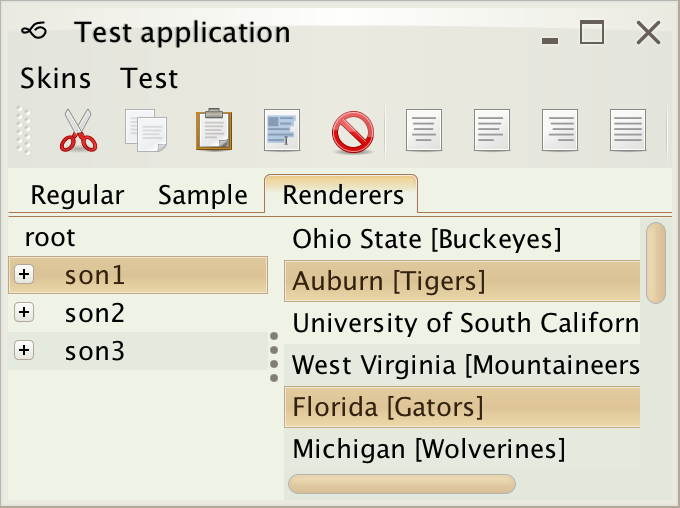
Sahara available in the
org.pushingpixels.substance.api.skin.SaharaSkin.
In addition, the
org.pushingpixels.substance.api.skin.SubstanceSaharaLookAndFeel
can be used with one of the following options:
SubstanceLookAndFeel.setSkin(new SaharaSkin())SubstanceLookAndFeel.setSkin("org.pushingpixels.substance.api.skin.SaharaSkin")-Dswing.defaultlaf=org.pushingpixels.substance.api.skin.SubstanceSaharaLookAndFeelUIManager.setLookAndFeel(new SubstanceSaharaLookAndFeel())UIManager.setLookAndFeel("org.pushingpixels.substance.api.skin.SubstanceSaharaLookAndFeel");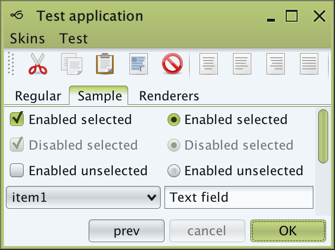 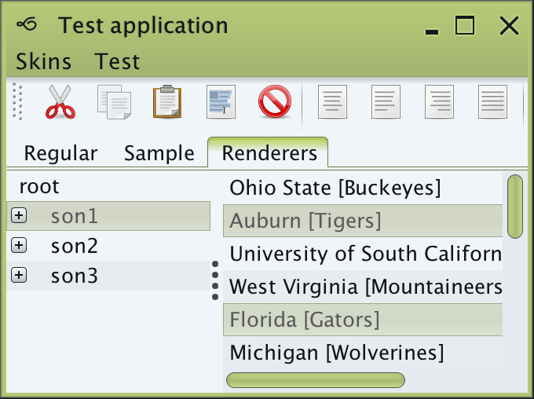
Moderate available in the
org.pushingpixels.substance.api.skin.ModerateSkin.
In addition, the
org.pushingpixels.substance.api.skin.SubstanceModerateLookAndFeel
can be used with one of the following options:
SubstanceLookAndFeel.setSkin(new ModerateSkin())SubstanceLookAndFeel.setSkin("org.pushingpixels.substance.api.skin.ModerateSkin")-Dswing.defaultlaf=org.pushingpixels.substance.api.skin.SubstanceModerateLookAndFeelUIManager.setLookAndFeel(new SubstanceModerateLookAndFeel())UIManager.setLookAndFeel("org.pushingpixels.substance.api.skin.SubstanceModerateLookAndFeel");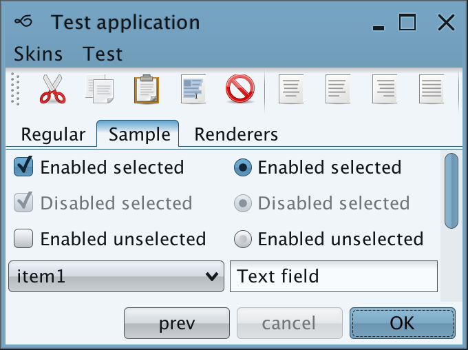 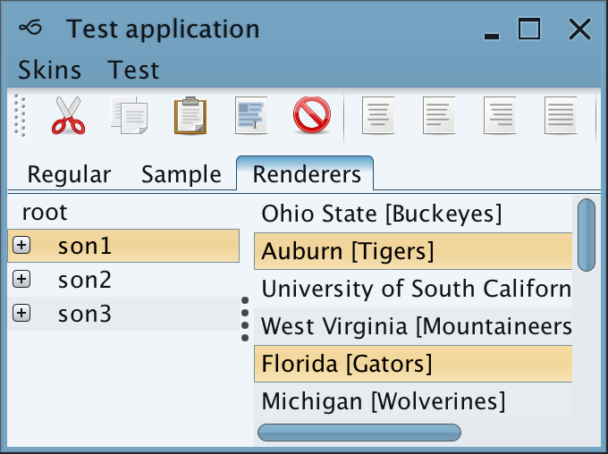
Nebula available in the
org.pushingpixels.substance.api.skin.NebulaSkin.
In addition, the
org.pushingpixels.substance.api.skin.SubstanceNebulaLookAndFeel
can be used with one of the following options:
SubstanceLookAndFeel.setSkin(new NebulaSkin())SubstanceLookAndFeel.setSkin("org.pushingpixels.substance.api.skin.NebulaSkin")-Dswing.defaultlaf=org.pushingpixels.substance.api.skin.SubstanceNebulaLookAndFeelUIManager.setLookAndFeel(new SubstanceNebulaLookAndFeel())UIManager.setLookAndFeel("org.pushingpixels.substance.api.skin.SubstanceNebulaLookAndFeel");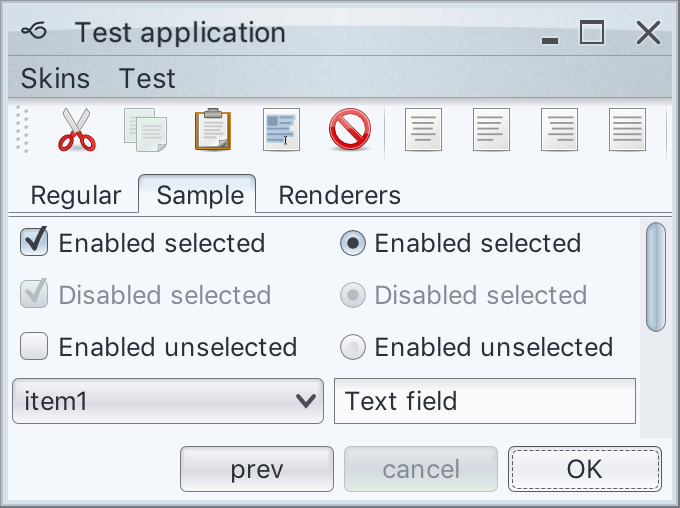 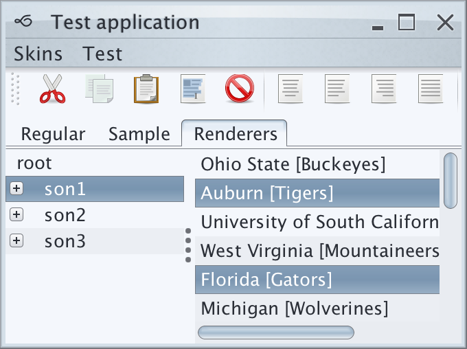
Nebula Brick Wall available in the
org.pushingpixels.substance.api.skin.NebulaBrickWallSkin.
In addition, the
org.pushingpixels.substance.api.skin.SubstanceNebulaBrickWallLookAndFeel
can be used with one of the following options:
SubstanceLookAndFeel.setSkin(new NebulaBrickWallSkin())SubstanceLookAndFeel.setSkin("org.pushingpixels.substance.api.skin.NebulaBrickWallSkin")-Dswing.defaultlaf=org.pushingpixels.substance.api.skin.SubstanceNebulaBrickWallLookAndFeelUIManager.setLookAndFeel(new SubstanceNebulaBrickWallLookAndFeel())UIManager.setLookAndFeel("org.pushingpixels.substance.api.skin.SubstanceNebulaBrickWallLookAndFeel");
 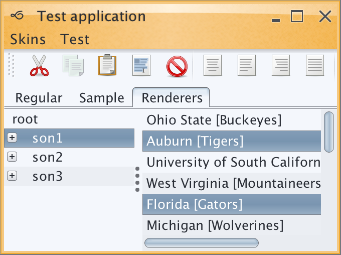
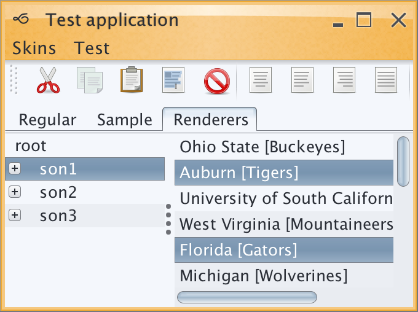
Autumn available in the
org.pushingpixels.substance.api.skin.AutumnSkin.
In addition, the
org.pushingpixels.substance.api.skin.SubstanceAutumnLookAndFeel
can be used with one of the following options:
SubstanceLookAndFeel.setSkin(new AutumnSkin())SubstanceLookAndFeel.setSkin("org.pushingpixels.substance.api.skin.AutumnSkin")-Dswing.defaultlaf=org.pushingpixels.substance.api.skin.SubstanceAutumnLookAndFeelUIManager.setLookAndFeel(new SubstanceAutumnLookAndFeel())UIManager.setLookAndFeel("org.pushingpixels.substance.api.skin.SubstanceAutumnLookAndFeel");
 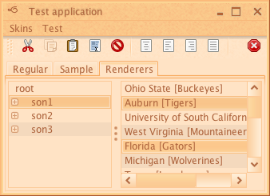
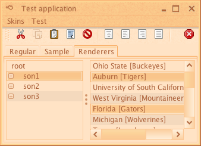
Mist Silver available in the
org.pushingpixels.substance.api.skin.MistSilverSkin.
In addition, the
org.pushingpixels.substance.api.skin.SubstanceMistSilverLookAndFeel
can be used with one of the following options:
SubstanceLookAndFeel.setSkin(new MistSilverSkin())SubstanceLookAndFeel.setSkin("org.pushingpixels.substance.api.skin.MistSilverSkin")-Dswing.defaultlaf=org.pushingpixels.substance.api.skin.SubstanceMistSilverLookAndFeelUIManager.setLookAndFeel(new SubstanceMistSilverLookAndFeel())UIManager.setLookAndFeel("org.pushingpixels.substance.api.skin.SubstanceMistSilverLookAndFeel");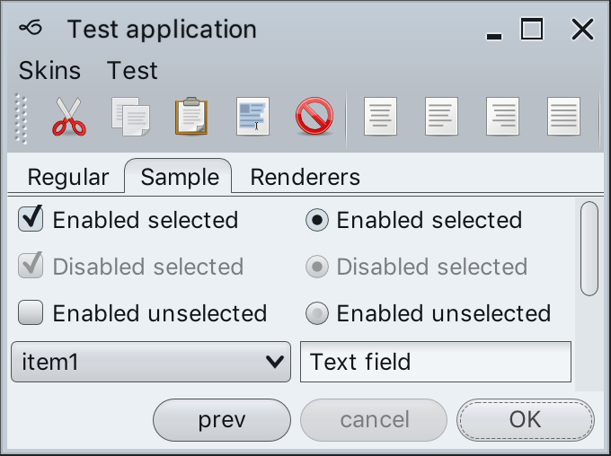 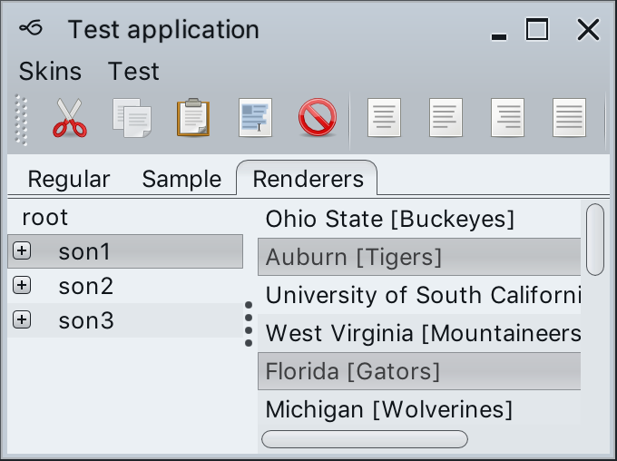
Mist Aqua available in the
org.pushingpixels.substance.api.skin.MistAquaSkin.
In addition, the
org.pushingpixels.substance.api.skin.SubstanceMistAquaLookAndFeel
can be used with one of the following options:
SubstanceLookAndFeel.setSkin(new MistAquaSkin())SubstanceLookAndFeel.setSkin("org.pushingpixels.substance.api.skin.MistAquaSkin")-Dswing.defaultlaf=org.pushingpixels.substance.api.skin.SubstanceMistAquaLookAndFeelUIManager.setLookAndFeel(new SubstanceMistAquaLookAndFeel())UIManager.setLookAndFeel("org.pushingpixels.substance.api.skin.SubstanceMistAquaLookAndFeel");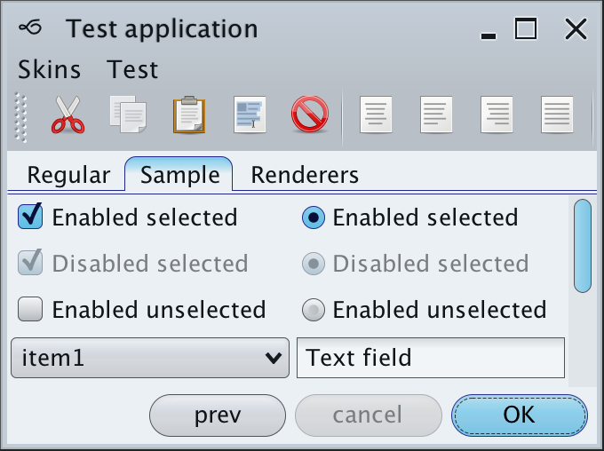 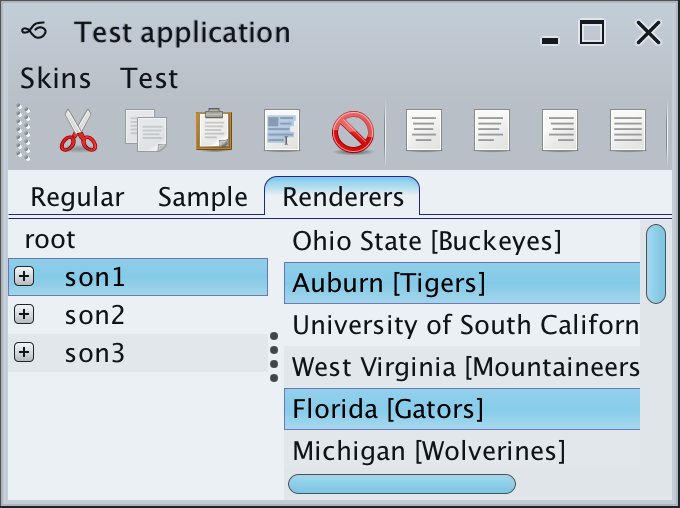
Dust available in the
org.pushingpixels.substance.api.skin.DustSkin.
In addition, the
org.pushingpixels.substance.api.skin.SubstanceDustLookAndFeel
can be used with one of the following options:
SubstanceLookAndFeel.setSkin(new DustSkin())SubstanceLookAndFeel.setSkin("org.pushingpixels.substance.api.skin.DustSkin")-Dswing.defaultlaf=org.pushingpixels.substance.api.skin.SubstanceDustLookAndFeelUIManager.setLookAndFeel(new SubstanceDustLookAndFeel())UIManager.setLookAndFeel("org.pushingpixels.substance.api.skin.SubstanceDustLookAndFeel");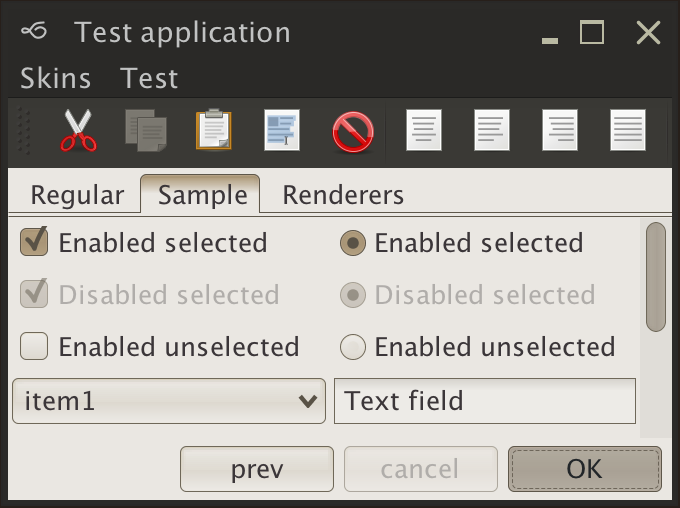 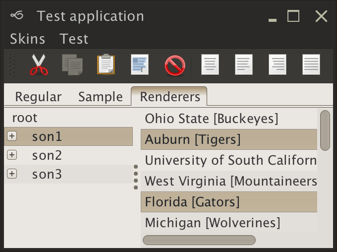
Dust Coffee available in the
org.pushingpixels.substance.api.skin.DustCoffeeSkin.
In addition, the
org.pushingpixels.substance.api.skin.SubstanceDustCoffeeLookAndFeel
can be used with one of the following options:
SubstanceLookAndFeel.setSkin(new DustCoffeeSkin())SubstanceLookAndFeel.setSkin("org.pushingpixels.substance.api.skin.DustCoffeeSkin")-Dswing.defaultlaf=org.pushingpixels.substance.api.skin.SubstanceDustCoffeeLookAndFeelUIManager.setLookAndFeel(new SubstanceDustCoffeeLookAndFeel())UIManager.setLookAndFeel("org.pushingpixels.substance.api.skin.SubstanceDustCoffeeLookAndFeel");
 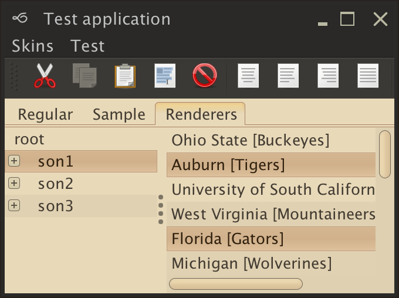
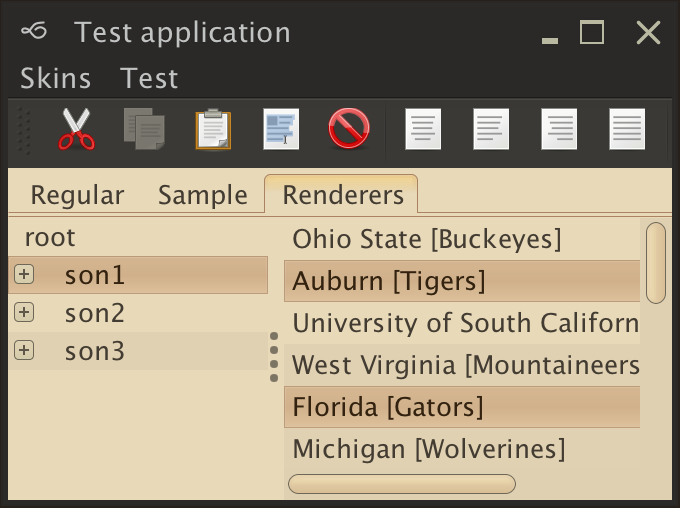
Gemini available in the
org.pushingpixels.substance.api.skin.GeminiSkin.
In addition, the
org.pushingpixels.substance.api.skin.SubstanceGeminiLookAndFeel
can be used with one of the following options:
SubstanceLookAndFeel.setSkin(new GeminiSkin())SubstanceLookAndFeel.setSkin("org.pushingpixels.substance.api.skin.GeminiSkin")-Dswing.defaultlaf=org.pushingpixels.substance.api.skin.SubstanceGeminiLookAndFeelUIManager.setLookAndFeel(new SubstanceGeminiLookAndFeel())UIManager.setLookAndFeel("org.pushingpixels.substance.api.skin.SubstanceGeminiLookAndFeel");
 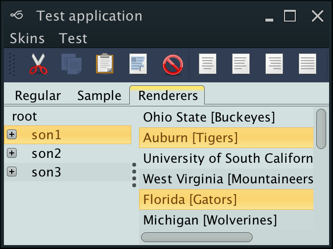
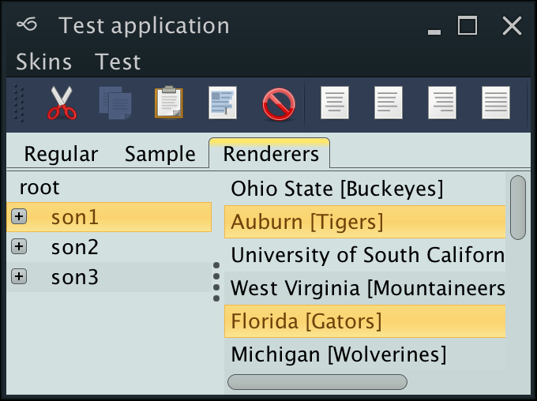
Mariner available in the
org.pushingpixels.substance.api.skin.MarinerSkin.
In addition, the
org.pushingpixels.substance.api.skin.SubstanceMarinerLookAndFeel
can be used with one of the following options:
SubstanceLookAndFeel.setSkin(new MarinerSkin())SubstanceLookAndFeel.setSkin("org.pushingpixels.substance.api.skin.MarinerSkin")-Dswing.defaultlaf=org.pushingpixels.substance.api.skin.SubstanceMarinerLookAndFeelUIManager.setLookAndFeel(new SubstanceMarinerLookAndFeel())UIManager.setLookAndFeel("org.pushingpixels.substance.api.skin.SubstanceMarinerLookAndFeel");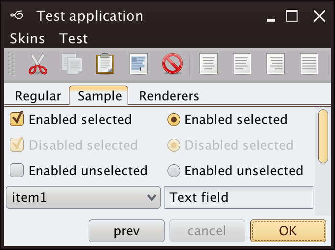 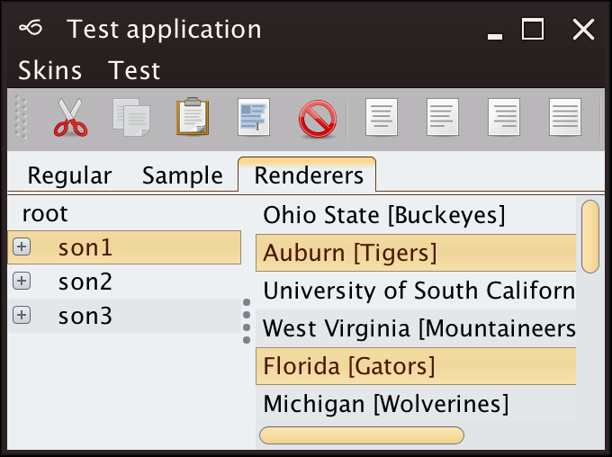
Office Silver 2007 available in the
org.pushingpixels.substance.api.skin.OfficeSilver2007Skin.
In addition, the
org.pushingpixels.substance.api.skin.SubstanceOfficeSilver2007LookAndFeel
can be used with one of the following options:
SubstanceLookAndFeel.setSkin(new OfficeSilver2007Skin())SubstanceLookAndFeel.setSkin("org.pushingpixels.substance.api.skin.OfficeSilver2007Skin")-Dswing.defaultlaf=org.pushingpixels.substance.api.skin.SubstanceOfficeSilver2007LookAndFeelUIManager.setLookAndFeel(new SubstanceOfficeSilver2007LookAndFeel())UIManager.setLookAndFeel("org.pushingpixels.substance.api.skin.SubstanceOfficeSilver2007LookAndFeel");

Office Blue 2007 available in the
org.pushingpixels.substance.api.skin.OfficeBlue2007Skin.
In addition, the
org.pushingpixels.substance.api.skin.SubstanceOfficeBlue2007LookAndFeel
can be used with one of the following options:
SubstanceLookAndFeel.setSkin(new OfficeBlue2007Skin())SubstanceLookAndFeel.setSkin("org.pushingpixels.substance.api.skin.OfficeBlue2007Skin")-Dswing.defaultlaf=org.pushingpixels.substance.api.skin.SubstanceOfficeBlue2007LookAndFeelUIManager.setLookAndFeel(new SubstanceOfficeBlue2007LookAndFeel())UIManager.setLookAndFeel("org.pushingpixels.substance.api.skin.SubstanceOfficeBlue2007LookAndFeel");

Office Black 2007 available in the
org.pushingpixels.substance.api.skin.OfficeBlack2007Skin.
In addition, the
org.pushingpixels.substance.api.skin.SubstanceOfficeBlack2007LookAndFeel
can be used with one of the following options:
SubstanceLookAndFeel.setSkin(new OfficeBlack2007Skin())SubstanceLookAndFeel.setSkin("org.pushingpixels.substance.api.skin.OfficeBlack2007Skin")-Dswing.defaultlaf=org.pushingpixels.substance.api.skin.SubstanceOfficeBlack2007LookAndFeelUIManager.setLookAndFeel(new SubstanceOfficeBlack2007LookAndFeel())UIManager.setLookAndFeel("org.pushingpixels.substance.api.skin.SubstanceOfficeBlack2007LookAndFeel");